However, this will produce the confusing "moncount" info. Leaving out the "-pg" flag and just using the OSX Sampler app (in [Mac HD]Developer/Applications/Performance Tools) seems preferable (alternatively, the OSX Shark app). To use the Sampler app, File->Attach to running CompuCellPlayer program. Click 'Start Recording' button then after a bit, 'Stop Recording'. Also, change 'Display counts as' to Percent.
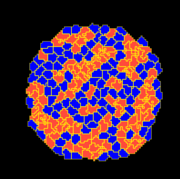
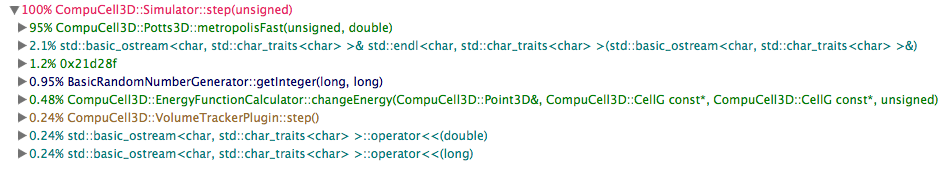
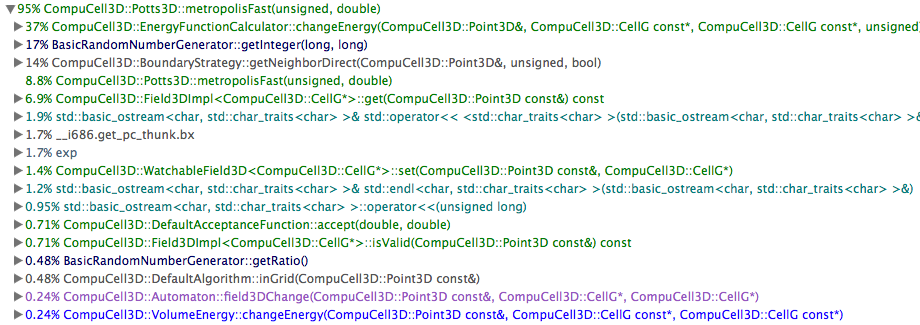
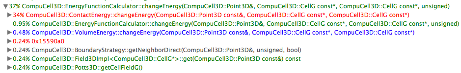
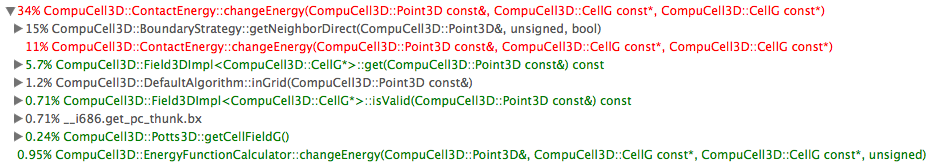
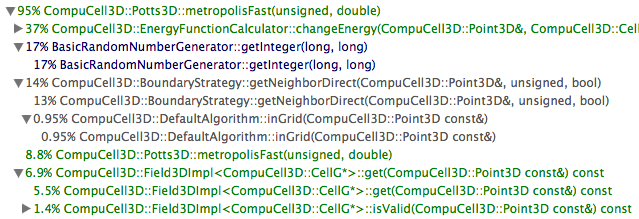
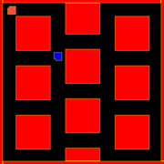
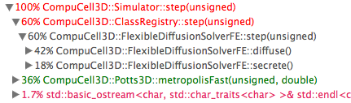
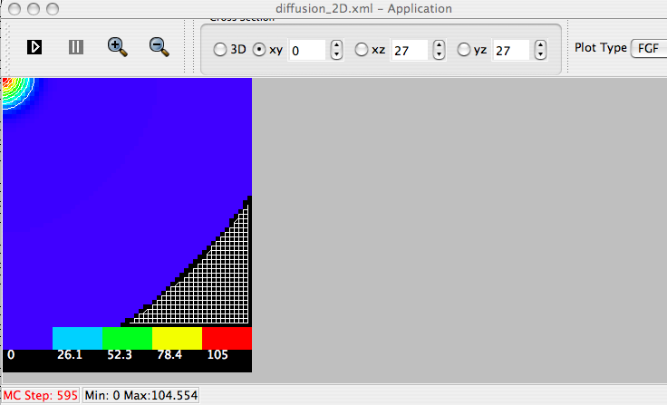
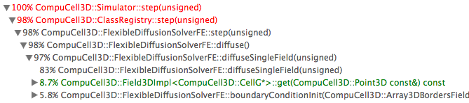
Output from gprof:
% cumulative self self total time seconds seconds calls ms/call ms/call name 15.4 2.00 2.00 _moncount (193311) 5.7 2.75 0.74 _szone_free [1] 4.6 3.34 0.59 _szone_malloc [2] 2.6 3.68 0.34 _aa_line_render_shape [4] 1.9 3.93 0.25 __ZN4QPenaSERKS_ [6] 1.8 4.17 0.24 ___CFStringHash [7] 1.6 4.38 0.21 _path_element [11] 1.5 4.58 0.20 ___CFStringEqual [12] 1.4 4.76 0.18 __ZN31QCoreGraphicsPaintEnginePrivate12setStrokePenERK4QPen [13] 1.4 4.95 0.18 __CFRuntimeCreateInstance [14] 1.3 5.12 0.17 __ZN31QCoreGraphicsPaintEnginePrivate8drawPathEhP6CGPath [15] 1.2 5.28 0.16 _sseCGSFill8by1 [16] 1.2 5.42 0.15 _aal_geometry [17] 1.2 5.58 0.15 mcount (33534) 1.1 5.71 0.14 1039 0.13 0.13 past end of text <cycle 1> [18] 1.1 5.86 0.14 _CGBlt_initialize [19] 1.1 6.00 0.14 _CGPathAddLineToPoint [20] 1.1 6.13 0.14 __CFRelease [21] 1.1 6.28 0.14 _argb32_pattern [22] 1.1 6.42 0.14 _szone_calloc [23] 1.0 6.54 0.13 _path_add [24] 0.9 6.67 0.12 _CGPathApply [25] 0.9 6.79 0.12 __ZN15QPainterPrivate24updateEmulationSpecifierEP13QPainterState [26] 0.9 6.90 0.12 __ZN6QBrushC1ERKS_ [27] 0.9 7.01 0.12 _aa_lineto [28] 0.9 7.13 0.12 _argb32_mark [29] 0.9 7.25 0.12 _szone_size [30] 0.8 7.36 0.11 __ZN24QCoreGraphicsPaintEngine11updateStateERK17QPaintEngineState [31] 0.8 7.46 0.10 8397479 0.00 0.00 __ZN26BasicRandomNumberGenerator10getIntegerEll [32] 0.8 7.55 0.10 __ZN6QBrushD1Ev [33] 0.7 7.65 0.10 _aa_closepath [34] 0.7 7.74 0.09 __ZN8QPainter6setPenERK4QPen [35] 0.7 7.83 0.09 _pthread_mutex_unlock [36] 0.6 7.91 0.08 _CGContextDrawPath [37] 0.6 7.99 0.08 __CG_spin_lock_try [38] 0.6 8.07 0.08 __ZN15QPainterPrivate11updateStateEP13QPainterState [39] 0.6 8.15 0.08 __ZNK4QPen5styleEv [40] 0.6 8.23 0.08 _pthread_mutex_lock [41] 0.6 8.31 0.08 _spin_lock [42] 0.6 8.38 0.07 _CGSFillDRAM8by1 [43]
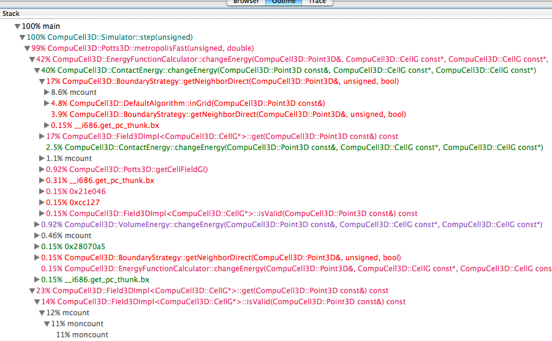
And we show a trace from the same run, highlighting the longest trace (call stack; depth=15) in this run:
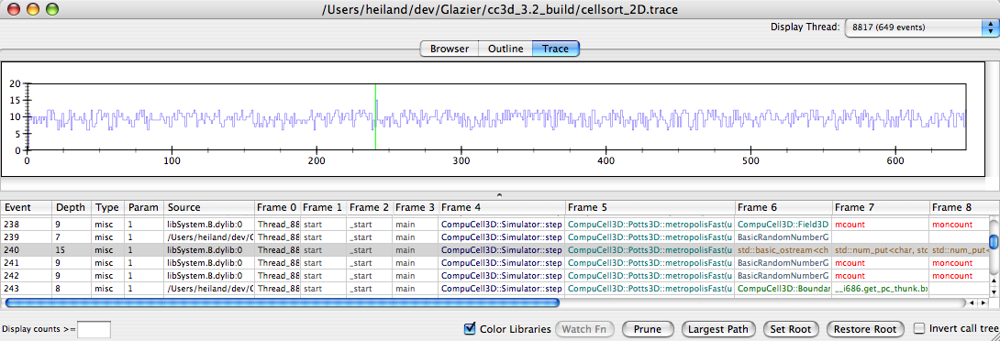